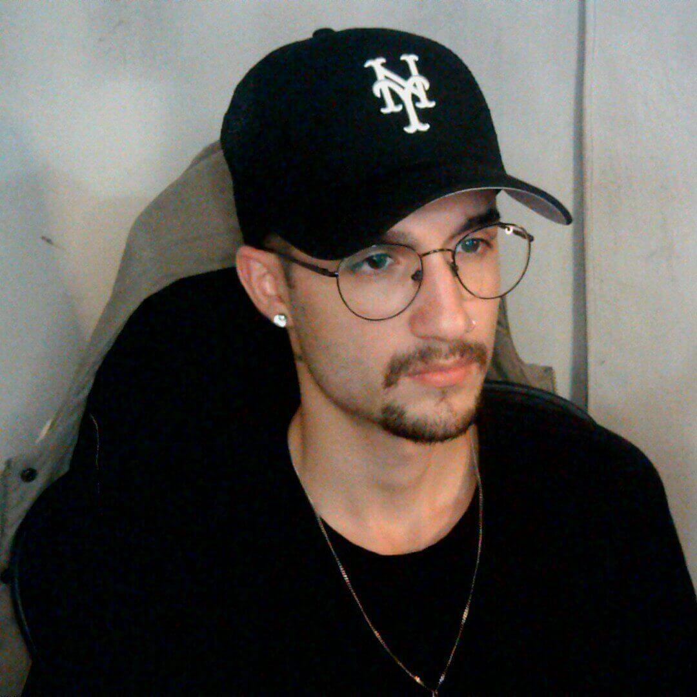
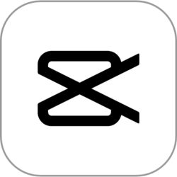
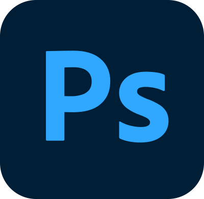

Quem sou eu
Sou o Marco, jogador casual de RuneScape há mais de 10 anos. No canal Marco’sTV_RS eu trago notícias e atualizações, opiniões, reacts, guias, missões e batalhas contra chefes.
Como o canal começou
O canal nasceu da vontade de reviver a comunidade brasileira de RuneScape. Como a maior parte do conteúdo sobre o jogo está em inglês, a ideia foi trazer informação atualizada em português e, aos poucos, construir um sumário e um glossário do jogo para quem joga no Brasil.
Como faço os vídeos
Gravação
Uso o OBS Studio, a base de toda a produção do canal.
Edição

Os vídeos são editados no CapCut.
Thumbnails

As capas dos vídeos são feitas no Photoshop.
Publicação

Tudo vai para o YouTube.
Trilha Sonora Principal do Jogo
Trilha sonora de RuneScape © Jagex.